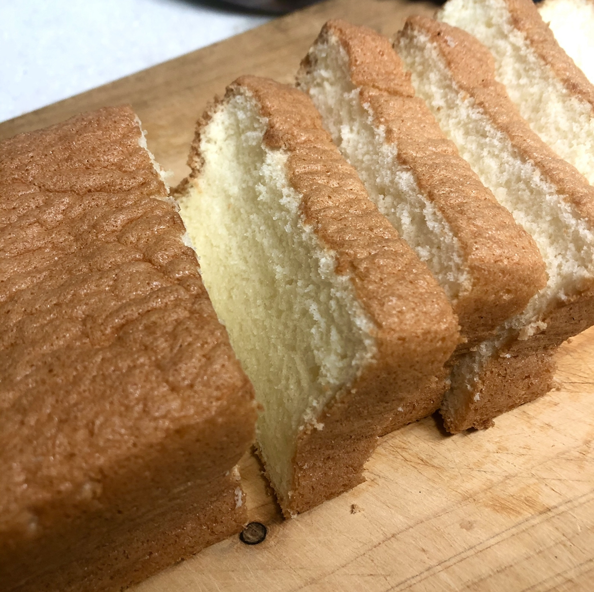

Sponge cake
계란
우유
식용유
설탕, 소금
박력분
바닐라 익스트렉
1. 식용유에 바닐라 익스트렉과 섞어준다.
2. 계란 흰자와 설탕으로 머랭 상태를 만들어준다.
3. 박력분을 체에 치고 약하게 머랭과 섞는다.
4. 1번의 식용유도 같이 섞어준다.
5. 반죽을 틀에 넣어준다.
6. 예열된 오븐에서 170도 15분 굽고, 다시 160도에서 35분간 구워준다.